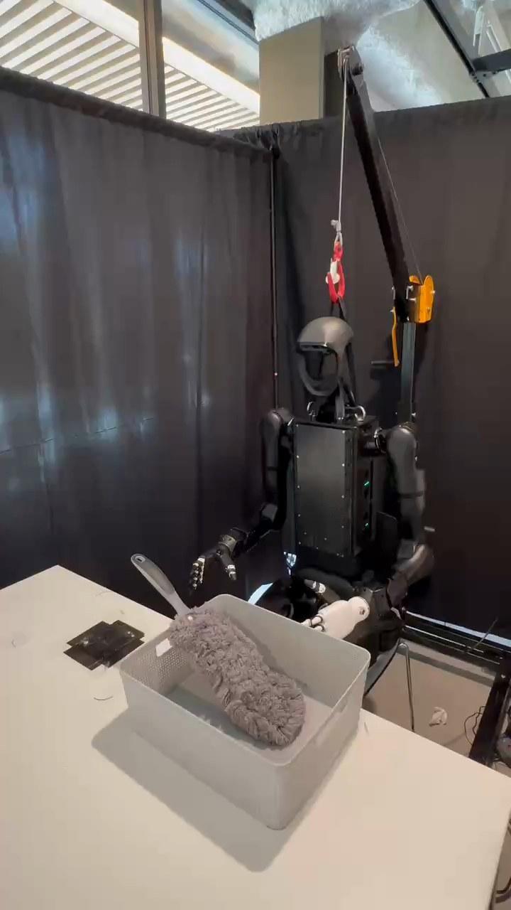

Humanoid Everyday · tool-use-5__use_a_duster_to_dust_the_desk
Use a duster to dust the desk

Visual review action_review.json
{
"prompt_protocol": "humanoid_action_v1",
"prompt_provenance": "visually_authored_from_video_and_initial_frame",
"reviewed_contact_sheets": [
"sheet_001.jpg",
"sheet_002.jpg",
"sheet_003.jpg",
"sheet_004.jpg"
],
"inspected_frame_stride": 2,
"inspected_sampled_frame_count": 216,
"initial_scene": "The robot faces the camera obliquely across a tabletop. A gray handled fluffy duster lies diagonally in an open basket, with its handle projecting toward the robot's anatomical right. The right hand is free near that handle; the left hand rests at the lap behind the basket.",
"observed_sequence": [
{
"start_frame": 0,
"end_frame": 22,
"action": "Right hand remains free near the duster handle, while the duster lies in the basket and left hand stays near the lap.",
"confidence": "high"
},
{
"start_frame": 23,
"end_frame": 174,
"action": "Right arm raises, extends and descends toward the projecting handle; open fingers approach it without moving the duster from the basket.",
"confidence": "high"
},
{
"start_frame": 175,
"end_frame": 206,
"action": "Right fingers close around the duster handle and adjust the hold while its fluffy head remains inside the basket.",
"confidence": "high"
},
{
"start_frame": 207,
"end_frame": 240,
"action": "Right hand lifts the duster clear of the basket, rotating its head upward and outward.",
"confidence": "high"
},
{
"start_frame": 241,
"end_frame": 306,
"action": "Right arm carries the raised duster outward across the exposed tabletop on the robot's right. The fluffy head descends but appears above the tabletop during most of this arc.",
"confidence": "high"
},
{
"start_frame": 307,
"end_frame": 338,
"action": "Right hand brings the duster back nearer the basket and lowers its head onto the tabletop alongside the basket; handle remains held as it settles.",
"confidence": "high"
},
{
"start_frame": 339,
"end_frame": 360,
"action": "Right fingers release the handle, leaving the duster outside the basket on the tabletop, and hand rises clear.",
"confidence": "high"
},
{
"start_frame": 361,
"end_frame": 431,
"action": "Empty right hand retracts toward the body. Duster remains on the tabletop beside the basket and left hand remains at the lap.",
"confidence": "high"
}
],
"arm_hand_roles": {
"right": "Sole manipulator: grasps projecting handle, lifts duster out of basket, carries and lowers it beside basket, releases and retracts.",
"left": "Remains near the lap behind the basket; no visible support, transfer or tool manipulation."
},
"anatomical_side_evidence": {
"description": "The initial PNG and native frames expose the robot's face and front torso. The active arm at image left can be traced from the robot's right shoulder down to the hand; the image-right shoulder leads to the inactive left arm and white hand at the lap. Anatomical naming follows these body attachments rather than image direction alone.",
"confidence": "high",
"uncertainty": null
},
"coordination": "Single right-hand manipulation; no coordinated left-hand support or hand-to-hand transfer occurs.",
"evidence_frame_indices": [
0,
84,
178,
210,
238,
286,
304,
320,
334,
354,
382,
431
],
"initial_png_inspected_at_native_resolution": true,
"inspection_coverage": "Viewed all four full-sequence contact sheets covering frames 0–430 every two decoded frames, 216 samples. Viewed native frames 84,178,210,238,286,304,320,334,354,382,431 and native source first-frame PNG.",
"terminal_state": "The duster is released on the tabletop immediately beside the basket on the robot's right; fluffy head rests outside the basket and handle angles upward. The empty right hand is withdrawn near the body; left hand stays at the lap. Basket is empty.",
"uncertainties": [
"The fluffy head passes low over the desk but prolonged or systematic brushing contact is not clearly visible; dust removal and a cleaned desk cannot be verified."
],
"annotation_discrepancies": [
"The original instruction describes systematic coverage and effective dust removal; this clip visibly establishes pickup, a single outward-and-return duster movement, and release beside the basket, without establishing those cleaning outcomes.",
"Source metadata's publisher sheet description places the duster initially on the desk; the initial PNG shows the fluffy head lying within the basket."
],
"selected_execution_status": "uncertain",
"observed_manipulation_status": "Successful visible pickup, transport and release; intended dust-cleaning effect uncertain.",
"video_id": "tool-use-5",
"dataset": "Humanoid_Everyday",
"dedicated_review_agent": "review_he_tool_use_5",
"review_source_video": "Humanoid_Everyday/tool-use-5__use_a_duster_to_dust_the_desk/third_person/original/original.mp4",
"source_frame_count": 432,
"source_fps": 29.930715935334874,
"native_detail_frames": [
84,
178,
210,
238,
286,
304,
320,
334,
354,
382,
431
],
"world_model_prompt": "The robot grasps the gray duster's handle with its right hand and lifts the duster out of the basket. It moves the fluffy head outward over the exposed tabletop, brings it back beside the basket, and releases the duster onto the tabletop before withdrawing its right hand. Keep the camera fixed; preserve robot geometry, physically valid joint motion, and normal gripper opening and closing.",
"original_task_instruction": "This task demonstrates cleaning tool usage where the humanoid robot uses a duster to clean a desk surface, requiring proper motion patterns, systematic coverage, and effective dust removal techniques.",
"selected_segment": {
"start_frame": 0,
"end_frame_exclusive": 432,
"reason": "Complete original single-task reference; no cropping or trimming requested."
},
"source_video_sha256": "9d7646388dffb680cdab29a03ea57f2cf6f39baec1ca3191fdd3ceb07bf579c6",
"review_completed_at": "2026-10-13T16:56:14.797414+00:00"
}